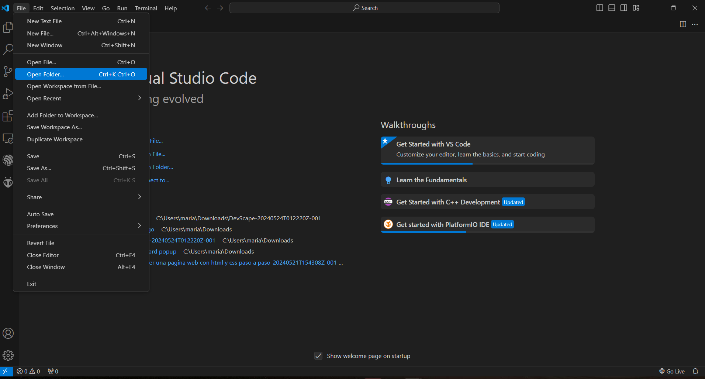
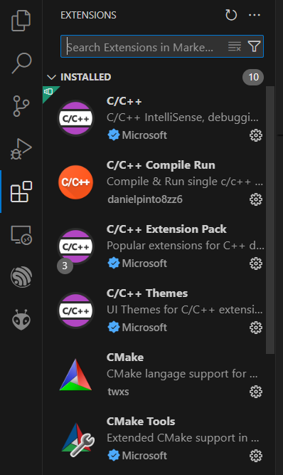

Bienvenido
a DevScape
Aprende y practica desarrollo web
.png)
Descubre lo que puedes lograr con DevScape
.png)
Exploración de nuevas tecnologías y tendencias.

Preparación para carreras en tecnología y desarrollo web.
Desarrollo de sitios web y aplicaciones innovadoras.
Mejora de habilidades en programación y diseño web.
Contribución a proyectos de código abierto.
Colaboración en proyectos y comunidades tecnológicas.
Sobre
nosotros
DevScape nace de la necesidad de simplificar el aprendizaje del desarrollo web, especialmente para estudiantes universitarios. Creamos esta distribución de sistema operativo para proporcionar herramientas accesibles y comprensibles que faciliten el inicio de cualquier persona en el mundo del desarrollo web. Nuestra motivación proviene de nuestras propias experiencias y estamos comprometidos a compartir nuestros aprendizajes para que otros puedan comenzar su viaje tecnológico con confianza y facilidad.
¿Por qué elegir DevScape para tu viaje en el desarrollo web?
Entorno Completo:
Ofrece un entorno listo para empezar a crear proyectos web desde el primer día.Facilidad de Uso:
Con una interfaz intuitiva y amigable, DevScape hace que aprender y practicar el desarrollo web sea accesible para todos.Herramientas Potentes y Versátiles:
Ofrece las herramientas más actuales listas para trabajar.Comunidad de Apoyo:
Al unirte a DevScape, accedes a una red de desarrolladores apasionados listos para ayudarte en tu viaje en el desarrollo web.Flexibilidad y Personalización:
DevScape es altamente personalizable, permitiéndote adaptar el sistema operativo a tus necesidades y preferencias individuales.Actualizaciones y Soporte Constantes:
DevScape se mantiene actualizado con las ultimas tecnologias y ofrece soporte continuo.Descargar el
Sistema Operativo
Click Aquí para Descargar

Lista de programas

Visual Studio Code
PyCharm
Thonny

CodeAcademy
IntelliJ IDEA

ChatGPT
Visual Studio Code
Descripción:
Visual Studio Code (VS Code) es un editor de código fuente desarrollado por Microsoft. Es gratuito, de código abierto y soporta una gran cantidad de lenguajes de programación a través de extensiones.
Para qué sirve:
VS Code es utilizado para escribir y depurar código en diversos lenguajes de programación. Es altamente configurable y extensible, lo que lo hace ideal para el desarrollo web, entre otros usos.
Lenguajes soportados:
- -JavaScript
- -Python
- -Java
- -C++
- -HTML/CSS
- -TypeScript
- -!Y muchos más a través de extensiones!
Alcance profesional:
VS Code es ampliamente utilizado en la industria del desarrollo de software. Su flexibilidad y capacidad de personalización lo hacen una herramienta valiosa tanto para desarrolladores individuales como para equipos en empresas grandes y pequeñas.
Recomendación de uso:
Es altamente recomendable debido a su versatilidad, amplia comunidad y soporte extensivo para múltiples lenguajes y frameworks.
Tutorial de uso:
Instalación: Descarga VS Code desde Visual Studio Code. Instálalo siguiendo las instrucciones para tu sistema operativo.
Primeros pasos:
- 1.-Abre VS Code.
- 2.-Abre una carpeta o un archivo existente usando "File" > "Open Folder".

Configuración inicial:
- 1.-Instala extensiones esenciales como Prettier (formateador de código) y ESLint (linter). 
- 2.-Configura tu entorno de desarrollo para el lenguaje que estás usando a través de las preferencias.
Escribir código:
- 1.-Crea un nuevo archivo con "File" > "New File".
- 2.-Selecciona el lenguaje de programación o deja que VS Code lo detecte automáticamente.
Depuración:
- Configura puntos de interrupción y usa el panel de depuración para ejecutar y depurar tu código.

Extensiones:
- Explora la Marketplace de extensiones para añadir funcionalidades adicionales según tus necesidades.
Como grupo, esta es nuestra app favorita. ¡Altamente recomendada!.
CLion
Descripción:
CLion es un poderoso IDE desarrollado por JetBrains, especialmente diseñado para C y C++.
Para qué sirve:
CLion facilita el desarrollo de software en C y C++, proporcionando herramientas avanzadas de depuración y análisis de código.
Lenguajes soportados:
- -C
- -C++
- -Python (con plugin)
- -Rust (con plugin)
- !Y más a través de plugins!
Alcance profesional:
Es utilizado en la industria para el desarrollo de aplicaciones de alto rendimiento y sistemas embebidos.
Recomendación de uso:
Recomendado para desarrolladores serios de C y C++ que buscan un entorno de desarrollo integrado robusto y fiable.
Tutorial de uso:
Instalación: Descarga CLion desde JetBrains CLion. Instálalo siguiendo las instrucciones.
Primeros pasos:
- 1.-Abre CLion.
- 2.-Crea un nuevo proyecto o abre uno existente.
Configuración inicial:
- 1.-Configura el compilador y las herramientas de desarrollo en "Settings".
- 2.-Instala plugins adicionales si es necesario.
Escribir código:
- 1.-Crea un nuevo archivo fuente en C o C++.
- 2.-Escribe y guarda tu código.
Depuración:
- Configura puntos de interrupción y usa el depurador integrado para ejecutar tu código.
Extensiones:
- Explora e instala plugins desde el marketplace para ampliar las funcionalidades de CLion.
Inténtalo y mejora tu flujo de trabajo en desarrollo C/C++.
PyCharm
Descripción:
PyCharm es un IDE desarrollado por JetBrains, especializado en Python.
Para qué sirve:
Está diseñado para proporcionar un entorno de desarrollo eficiente para proyectos Python, con soporte para Django y otras tecnologías web.
Lenguajes soportados:
- -Python
- -JavaScript
- -HTML/CSS
- -SQL
- -Y más a través de plugins.
Alcance profesional:
Amplio uso en la industria para desarrollo web, análisis de datos y automatización.
Recomendación de uso:
Altamente recomendado para desarrolladores de Python que buscan un entorno robusto y lleno de características.
Tutorial de uso:
Instalación: Descarga PyCharm desde JetBrains PyCharm. Instálalo siguiendo las instrucciones.
Primeros pasos:
- 1.-Abre PyCharm.
- 2.-Crea un nuevo proyecto en Python o abre uno existente.
Configuración inicial:
- 1.-Configura el intérprete de Python en "Settings".
- 2.-Instala plugins adicionales si es necesario.
Escribir código:
- 1.-Crea un nuevo archivo Python.
- 2.-Escribe y guarda tu código.
Depuración:
- Configura puntos de interrupción y usa el depurador integrado para ejecutar tu código.
Extensiones:
- Explora e instala plugins desde el marketplace para ampliar las funcionalidades de PyCharm.
Ideal para desarrollar con Python de manera eficiente.
Thonny
Descripción:
Thonny es un IDE simple y amigable para aprender a programar en Python.
Para qué sirve:
Diseñado para principiantes, proporciona una interfaz limpia y funcionalidades de depuración fáciles de usar.
Lenguajes soportados:
- Python
Alcance profesional:
Principalmente educativo, utilizado en instituciones académicas para enseñar programación.
Recomendación de uso:
Perfecto para principiantes en Python debido a su simplicidad y facilidad de uso.
Tutorial de uso:
Instalación: Descarga Thonny desde Thonny. Instálalo siguiendo las instrucciones.
Primeros pasos:
- 1.-Abre Thonny.
- 2.-Crea un nuevo archivo Python.
Escribir código:
- 1.-Escribe tu código en el editor.
- 2.-Guarda y ejecuta tu código.
Depuración:
- Usa las herramientas de depuración integradas para entender el flujo de tu programa.
Recomendado para aprender Python desde cero.
CodeAcademy
Descripción:
CodeAcademy es una plataforma interactiva de aprendizaje en línea que ofrece cursos gratuitos en diversos lenguajes de programación.
Para qué sirve:
Proporciona una forma accesible y divertida de aprender a programar, desde HTML y CSS hasta JavaScript y Python.
Lenguajes soportados:
- -HTML/CSS
- -JavaScript
- -Python
- -Java
- -SQL
- -!Y mucho más!
Alcance profesional:
Ideal para principiantes y desarrolladores en formación. Útil para obtener habilidades básicas antes de pasar a entornos de desarrollo más complejos.
Recomendación de uso:
Excelente para quienes desean aprender a programar desde cero con una metodología práctica y atractiva.
Tutorial de uso:
Registro: Regístrate en CodeAcademy y elige un curso para empezar.
Primeros pasos:
- 1.-Inicia sesión en CodeAcademy.
- 2.-Selecciona un curso y sigue las instrucciones.
Perfecto para aprender a programar de forma interactiva.
IntelliJ IDEA
Descripción:
IntelliJ IDEA es un potente IDE desarrollado por JetBrains. Es conocido por su excelente soporte para Java, aunque también soporta muchos otros lenguajes de programación.
Para qué sirve:
Está diseñado para el desarrollo de software en Java, pero también es compatible con Kotlin, Groovy, Scala y otros lenguajes. Ideal para proyectos complejos de software empresarial.
Lenguajes soportados:
- Java
- Kotlin
- Groovy
- Scala
- Python (con plugin)
- Y más
Alcance profesional:
IntelliJ IDEA es una herramienta estándar en la industria del desarrollo de software, especialmente en proyectos de gran escala y aplicaciones empresariales.
Recomendación de uso:
Altamente recomendable para desarrolladores serios de Java y otros lenguajes soportados por su robustez y características avanzadas.
Tutorial de uso:
Instalación: Descarga IntelliJ IDEA desde JetBrains. Instálalo siguiendo las instrucciones.
Primeros pasos:
- 1.-Abre IntelliJ IDEA.
- 2.-Crea un nuevo proyecto seleccionando "New Project".
Configuración inicial:
- 1.-Selecciona el SDK y el lenguaje de programación que usarás.
- 2.-Configura las dependencias del proyecto.
Escribir código:
- 1.-Crea un nuevo archivo o clase dentro del proyecto.
- 2.-Escribe tu código en el editor.
Depuración y pruebas:
- Usa las herramientas de depuración y prueba integradas para asegurar la calidad del código.
Plugins:
- Instala plugins adicionales desde el Marketplace de IntelliJ para ampliar sus funcionalidades.
Imagen sugerida: Captura de pantalla de IntelliJ IDEA con un proyecto Java abierto.
ChatGPT
Descripción:
ChatGPT es un modelo de lenguaje avanzado desarrollado por OpenAI, capaz de generar texto y mantener conversaciones naturales con los usuarios.
Para qué sirve:
Utilizado en aplicaciones de chatbots, asistentes virtuales, generación de contenido y mucho más, ofreciendo respuestas coherentes y contextualmente relevantes.
Lenguajes soportados:
- -Inglés
- -Español
- -Francés
- -Alemán
- -Italiano
- -Portugués
- -Y muchos más.
Alcance profesional:
Ampliamente utilizado en la industria para mejorar la interacción con los usuarios, automatizar respuestas y mejorar la eficiencia del servicio al cliente.
Recomendación de uso:
Altamente recomendable para desarrolladores y empresas que buscan integrar capacidades avanzadas de procesamiento de lenguaje natural en sus aplicaciones.
Tutorial de uso:
API: Integra ChatGPT en tu aplicación utilizando la API de OpenAI. Visita OpenAI API para más información.
Primeros pasos:
- 1.-Regístrate en OpenAI y obtiene tu clave API.
- 2.-Configura tu entorno de desarrollo para hacer solicitudes HTTP.
¿Cómo hacerle buenas preguntas o prompts a ChatGPT?:
- -Si algo hemos aprendido a lo largo de nuestra carrera, es a hacerle buenas preguntas a ChatGPT, mientras más precisas sean las preguntas y más información le proporcionemos al respecto sobre nuestro tema, mejores serán sus respuestas. He aquí algunos consejos:
- -Proporciona detalles concretos sobre lo que necesitas. Evita preguntas generales como "Háblame sobre programación" y opta por algo más específico como "¿Cuáles son las mejores prácticas para el manejo de errores en Python?".
- -Brinda contexto suficiente para que ChatGPT entienda mejor tu pregunta. Incluye información relevante sobre el tema, el propósito de tu consulta y cualquier otro detalle que pueda ayudar a enfocar la respuesta.
- -Indica claramente para qué necesitas la información. Por ejemplo, "Estoy escribiendo un artículo sobre las mejores prácticas en el desarrollo web, ¿puedes darme una introducción sobre la importancia de la accesibilidad en los sitios web?".
- -Divide las preguntas complejas en partes más manejables. En lugar de una pregunta extensa, usa varias preguntas más pequeñas y directas.
- -Si es posible, incluye ejemplos que ilustren lo que estás preguntando. Esto puede ayudar a ChatGPT a entender mejor el contexto y proporcionar una respuesta más precisa.
- -Define claramente cualquier restricción o requisito específico, como el tono (formal o informal), la longitud deseada de la respuesta o el formato (lista, párrafo, etc.).
- -Las preguntas abiertas son útiles para obtener información detallada y exploratoria, mientras que las preguntas cerradas son útiles para respuestas directas y específicas.
- -Si la respuesta inicial no es lo que esperabas, revisa tu pregunta para ver si puede ser más clara o específica, y vuelve a intentarlo. A menudo, ajustar la formulación de la pregunta puede mejorar significativamente la calidad de la respuesta.
Mejores prácticas:
- 1.-Asegúrate de manejar los errores y excepciones adecuadamente.
- 2.-Optimiza las llamadas a la API para mejorar la eficiencia y reducir costos.